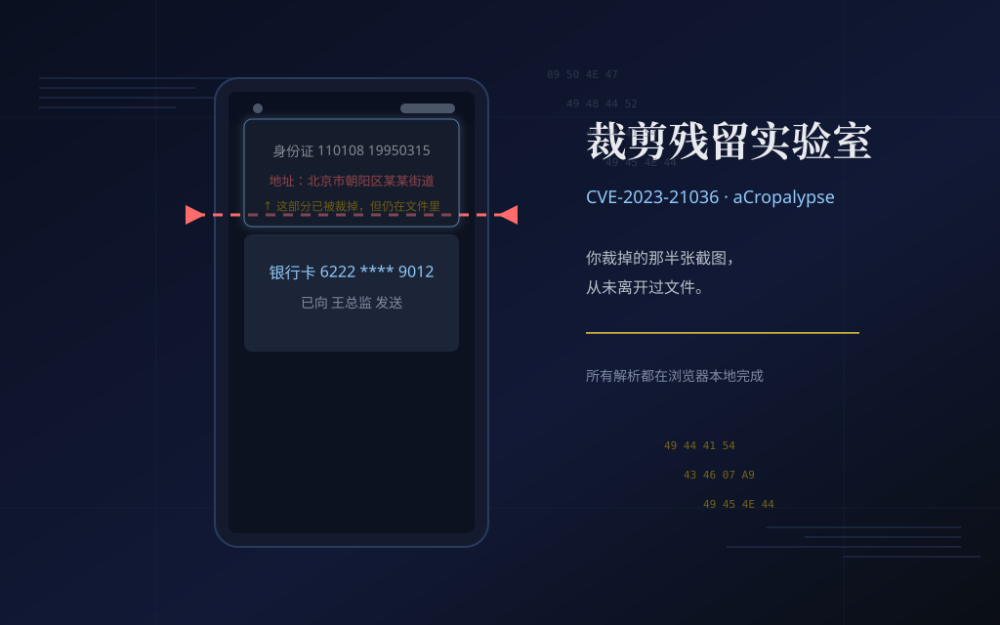
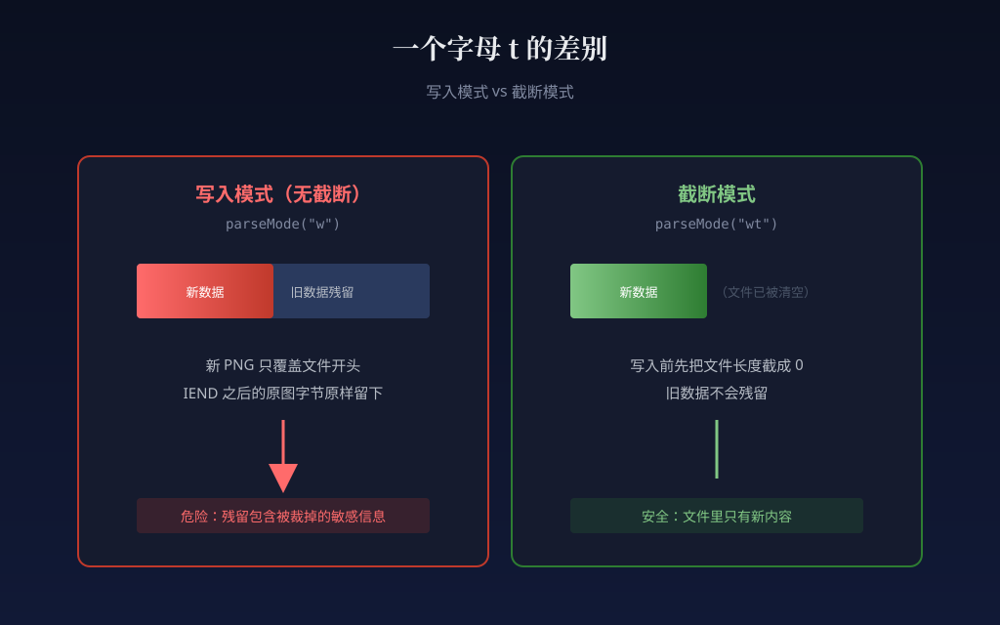
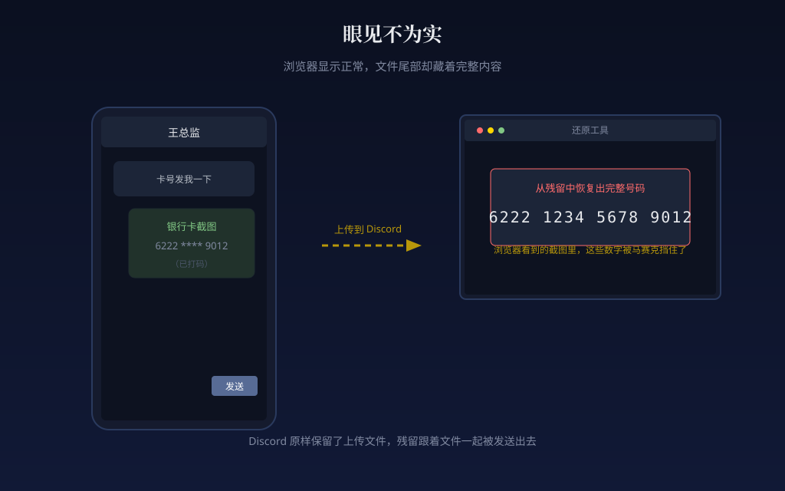

CVE-2023-21036 · aCropalypse
你裁掉的东西
还在文件里
2023 年 3 月被公开的一个 bug：Pixel 自带的截图编辑工具写文件时，
少了一个字母 t。五年内被你「裁掉」的半张图，可能连同银行卡号、
身份证、聊天记录，原样留在文件尾。
所有解析都在你的浏览器里跑，文件不上传、不联网。
零门槛 · 选一个场景看现场
模块一 · 犯罪现场
三张伪造的截图。点哪个就裁哪个，看「裁掉一半画面，文件一个字节都没变小」是怎么发生的。
本该只有 — B，实际 — B
裁掉 55% 的画面，文件一个字节都没变小。
本页样本使用未压缩 IDAT 存储块，体积与像素数成正比；真实 PNG 的压缩比会不同。
一个字母 t 的差别
模块二 · 一个字符的距离
Markup 工具写裁剪结果时，调用了 Android 的 ParcelFileDescriptor.parseMode(...)。传 "w" 和传 "wt"，差一个字母，行为却完全相反。
parseMode("w")ParcelFileDescriptor.parseMode("w");
parseMode("wt")ParcelFileDescriptor.parseMode("wt");

分步解析 · 四个按钮依次点亮
模块三 · 找到 IEND
每个 PNG 都是「8 字节签名 + 一串 chunk」。解码器读到 IEND 这个 chunk 就停下，IEND 之后挂多少字节都不影响显示 —— 这就是残留看不见的原因。
步骤 3.1 · 校验 8 字节签名
合法的 PNG 一定以这 8 个字节开头：
89 50 4E 47 0D 0A 1A 0A步骤 3.2 · 遍历 chunk
从偏移 8 起，每 4 字节是大端长度，再 4 字节是 chunk 类型 ASCII，再 N 字节是数据，最后 4 字节是 CRC32。
步骤 3.3 · 定位 IEND
IEND 是恒定的 12 字节，文件解析器一遇到它就停。把 IEND 结束偏移和文件总长相减 ——
字节，没被任何看图软件读到。
步骤 3.4 · hex viewer
残留区前 256 字节，识别到的 chunk 头用颜色高亮。
分步 · 五步对应算法核心
模块四 · 把残留拼回图像
PNG 编码器按扫描线写入，每行 1 字节 filter + 宽 × 3 字节 RGB。只要猜对原图宽度，残留字节立刻对齐成一幅画面。
简化说明：本演示的 IDAT 用 zlib「未压缩存储块」写，让「从任意字节处接着解」变得确定可算。 真实漏洞的恢复还要额外做 DEFLATE 比特级重同步（Buchanan 的文章讲的就是这一步）。 其余流程与真实漏洞完全一致。
眼见不为实
模块五 · 为什么所有看图软件都看不出来
把带残留的 buggy 文件塞进 <img> 看一眼 —— 显示完全正常。再看字节总数，残留和 IEND 之后的内容都算在文件大小里，但只有你和我知道它们在那儿。
这张图是用我们自己的编码器造的 buggy 文件，残留字节数 = —，等于把 IEND 之后的内容原样保留在磁盘上。
任何 <img>、任何看图软件、任何 CDN 都会把它当成合法 PNG 来显示，没有任何警告。

文件不上传，全部在浏览器里解析
模块六 · 测你自己的截图
拖一张本地 PNG 进来，纯前端解析。看到残留字节数；能恢复就试一下。绝大多数现代设备已经打补丁，0 字节是常态 —— 那也值得你点一下确认。
拖拽 PNG 到这里，或
不联网 · 不上传 · 仅在你的浏览器内解析
只列已证实条目
模块七 · 时间线与补丁表
- 触发组件：Pixel 自带截图工具 Markup（
parseMode("w")） - 根因：Android 10 起
parseMode不再隐含截断，调用方代码没改 - 影响时间：约 5 年，Markup 自 Android 9 / Pixel 3 起随机附带
- 公开者：Simon Aarons 与 David Buchanan，2023 年 3 月
- 补丁：2023 年 3 月安全更新（Android 13 QPR2 / Pixel 补丁 2023-03）
- 触发组件：Windows 11 截图工具、Windows 10 Snip & Sketch
- 评级：MSRC Low（CVSS 3.3）
- 修复版本：11.2302.20.0 / 10.2008.3001.0
- 公开者：David Buchanan
- 保留文件：Discord 等平台原样保留上传文件，残留会一起被带走
- 重新编码：会重新压缩的 CDN / App 顺手把残留抹掉，文件反而变干净
- 银行卡案例：Aarons 在 Discord 上公开还原的演示就是这种情况
把自己能做的列清楚
模块八 · 防御清单
另存为新文件
永远不要在原文件上覆盖。哪怕是「裁剪」也要「另存为」到新路径，原文件保持不动。
分享前重新编码
把要发的图先转存成 JPEG 一遍，让任何残留都被压缩抹平。JPEG 本身就是重新编码。
打码靠像素化 + 重编码
不要靠「盖图层」打码。盖的图层在原图文件里还在。必须把敏感区域像素化后再重新保存为新文件。
留意体积异常
裁掉了 90% 的画面，文件却只小了几个百分点，这本身就是个危险信号。怀疑了就别发。
把这一页的要点发到群里，让身边的人也少踩一次坑。